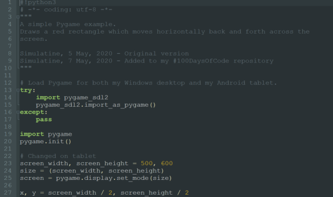

I spent my time today learning about GitHub Pages, and trying to get an image to display in my blog post. Yesterday I configured the default Jekyll site generator tool with the Minima theme. I placed my initial website contents in the docs folder in the master branch of my repository. I create a subfolder doc/images on my local drive, and added a simple screenshot image1.png. After committing this change, and syncing with GitHub, I confirmed that the folder and file were present in my repository. So far, so good.
10 May 2020: Since writing this post, I have moved from Jekyll to a Python based site generator tool called Pelican, so the links below may display differently than they did before.
Broken Images
I was able to display an image easily enough from a standard page in the root of my website with a Markdown image link:

But the same link format wasn't displaying properly in my blog post:

OK, so blog post files are in a different folder _posts. Maybe I need to use a rooted path:

which displayed

Hmm, this didn't work either - it seems that the /images directory that GitHub sees is not the same as the one I created. Neither did assuming the website root was one level up, at the root of the entire repository:

I get the same broken image link:

Solved!
After some investigation, I paid attention to the blog post URL in my brower's address bar, and realised my post is buried three levels down in a virtual folder hierarchy, with the year, month and date all represented by folders:
https://simulatine.github.io/100DaysOfCode/2020/05/08/Struggling-With-GitHub-Pages.html
Aha! Maybe a relative path would work. I would need to go three levels up from my post's URL to get back to the root of the website, so would need ../ three times:

Success! I can finally see an image: